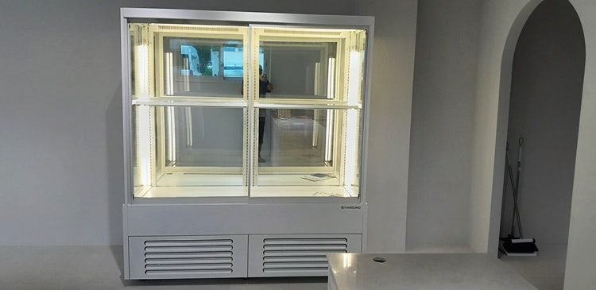
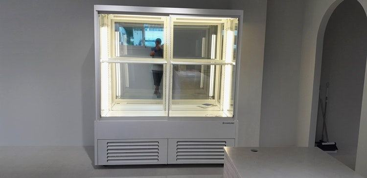
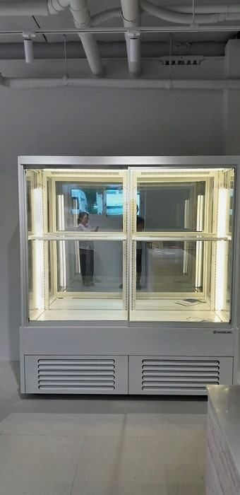
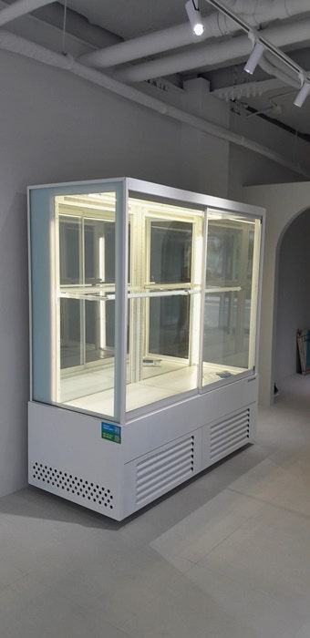
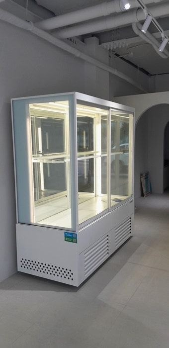
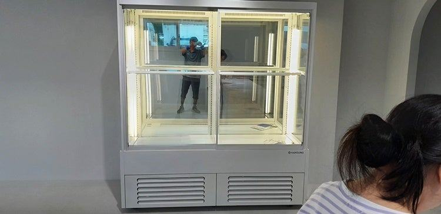
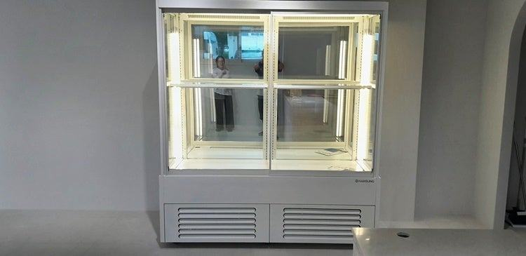
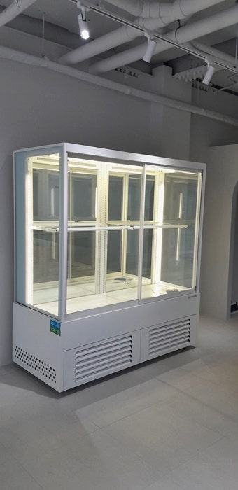
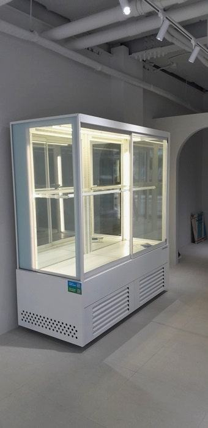
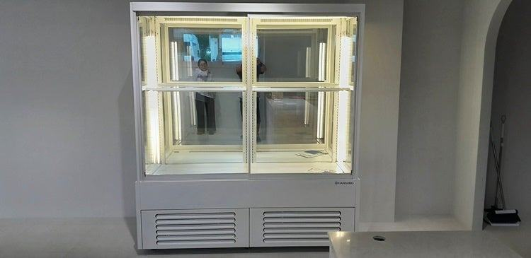

와인(음료)쇼케이스
업소용음료수냉장고 창업 준비, 고르는 순서부터 정리

창업 때 업소용음료수냉장고는 진열할 음료 종류와 하루 판매량을 먼저 정하고, 설치 자리와 손님 동선을 본 뒤, 문 구조와 냉각 방식을 고르는 순서로 정하시면 됩니다. 음료가 아닌 상품을 함께 넣을 계획이라면 음료용 냉장고가 맞지 않을 수 있으니 처음부터 용도를 분명히 하셔야 합니다.
안녕하세요. 카페, 식당, 소형 매장의 음료 쇼케이스를 직접 제작하는 한성쇼케이스입니다.
창업을 준비하시면 커피 머신, 제빙기, 인테리어처럼 큰 항목에 먼저 눈이 가고, 음료수 냉장고는 "나중에 아무거나 하나 들이면 되겠지" 하고 미뤄 두시는 경우가 많습니다.
그런데 음료수 냉장고는 손님이 매장에 들어와 가장 먼저 손을 대는 장비이기도 합니다. 크기가 애매하면 계산대 앞 동선이 막히고, 용량이 모자라면 여름 내내 채우느라 바쁘고, 문 방향이 맞지 않으면 손님과 직원이 계속 부딪힙니다.
오늘은 창업 준비 단계에서 업소용음료수냉장고를 고르는 순서를 차례대로 정리해 드리겠습니다. 처음 장비를 들이시는 1인 창업 사장님께 특히 도움이 될 내용입니다.
1. 1단계, 무엇을 얼마나 넣을지 정하기
캔과 페트병 위주인지, 유리병 주스와 우유까지 넣을지, 직접 만든 음료를 병에 담아 팔지에 따라 필요한 선반 간격과 온도가 달라집니다.
병 높이가 제각각이면 선반을 가변형으로 해야 공간이 남지 않습니다.
하루에 대략 몇 병을 팔지, 여름 성수기에는 얼마나 늘어날지도 가늠해 보세요. 한 번 채운 양으로 피크 시간을 버틸 수 있어야 직원이 손님 응대 중에 채우러 다니지 않습니다.
- 진열할 음료 종류와 병 높이를 적어 두세요.
- 평소와 성수기 판매량을 나눠 예상해 보세요.
2. 2단계, 자리와 동선 정하기
손님이 직접 꺼내는 셀프형이라면 입구에서 계산대로 가는 길목에 두는 경우가 많습니다. 이때 문이 열리는 방향과 통로 폭을 함께 봐야 손님이 문을 연 채로 고르는 동안 다른 손님이 지나갈 수 있습니다.
직원이 꺼내 주는 방식이라면 계산대 안쪽이나 뒤쪽 벽면이 맞습니다. 어느 경우든 뒷면과 옆면에 열이 빠질 공간이 있어야 하고, 커피 머신이나 오븐 바로 옆은 피하시는 게 좋습니다.
콘센트 위치도 인테리어 공사 전에 정해 두세요.


3. 3단계, 문 구조와 냉각 방식
유리문 1도어, 2도어, 3도어처럼 문 개수와 크기는 판매량과 자리 폭으로 정합니다. 문이 클수록 한 번 열 때 빠지는 냉기도 많으니, 회전이 빠른 매장이라면 작은 문 여러 개가 나은 경우도 있습니다.
냉각 방식은 팬으로 냉기를 돌리는 간냉식이 유리에 성에가 끼지 않고 문을 연 뒤 온도 회복이 빨라 음료 진열에 많이 쓰입니다.
결로 방지 기능이 있는 유리인지, 문이 저절로 닫히는 구조인지도 함께 확인해 보세요.
- 문 개수와 열리는 방향을 자리에 맞춰 정하세요.
- 간냉식 여부와 결로 방지 유리를 확인하세요.
4. 4단계, 외관과 예산 조정
음료 냉장고는 매장에서 크게 보이는 장비라 프레임 색과 조명이 인테리어에 영향을 줍니다. 기성품이 매장 분위기와 맞지 않는다면 색상과 크기를 맞춰 제작하는 방법이 있습니다.
예산이 빠듯하다면 꼭 필요한 기능 위주로 구성하고, 불필요한 옵션은 덜어 내세요. 한성쇼케이스는 직접 공장을 운영해 유통 단계를 줄이고 있어, 필요한 사양을 말씀해 주시면 그에 맞춘 구성으로 안내해 드립니다.
체크리스트
- 진열 음료 종류와 병 높이
- 평소·성수기 예상 판매량
- 셀프형인지 직원 응대형인지
- 문 개수와 열리는 방향
- 간냉식과 결로 방지 유리
- 콘센트 위치와 열 배출 공간
현장에서 자주 보는 경우: 음료수 냉장고를 다른 용도로 쓰려 할 때
창업 비용을 줄이려고 중고 업소용 음료수 냉장고를 들여 음료가 아닌 상품까지 보관하려는 예비 사장님이 많습니다.
꽃집을 준비하시던 분이 대표적인데, 음료수 냉장고는 캔과 병을 빨리 식히도록 강한 찬바람을 직접 보내는 구조라 꽃잎의 수분을 빠르게 빼앗습니다.
선반도 병 음료에 맞춰 좁게 짜여 있어 꽃병처럼 키가 큰 상품은 넣기 어렵습니다. 그래서 음료수 냉장고는 음료 판매에 쓰시고, 다른 상품은 그 상품에 맞는 전용 장비를 두시라고 권해 드립니다.
창업 때 용도를 분명히 정해 두셔야 장비를 두 번 사는 일을 막을 수 있습니다.








자주 묻는 질문
창업 초기에 작은 냉장고로 시작해도 될까요?
판매량이 확실하지 않다면 작게 시작할 수 있습니다. 다만 나중에 한 대를 더 놓을 자리와 콘센트를 미리 남겨 두시면 확장이 편합니다.
음료 외에 디저트도 같이 넣어도 되나요?
포장된 디저트라면 가능하지만, 적정 온도와 선반 높이가 음료와 달라 진열이 어색해질 수 있습니다. 비중이 크다면 칸을 나누거나 별도 쇼케이스를 고려해 보세요.
설치 후 A/S는 어떻게 받나요?
한성쇼케이스는 전국 240여 개 A/S 센터를 운영하고 있습니다. 창업 지역과 관계없이 가까운 센터로 접수하실 수 있습니다.
매장 조건에 맞춰 만드는 한성쇼케이스
원하시는 제품 사진과 설치할 공간 사진만 보내 주셔도 매장에 맞는 구성을 추천해 드립니다.
- 전국 240여 개 A/S 전담 센터 운영
- 본사 대량 자재 매입으로 품질 대비 합리적인 가격
- 유럽제·삼성 냉각 콤프레셔 적용
- 국내 최초 쇼케이스 전문 디자이너 상주
매장 폭과 원하는 진열 구성을 알려 주세요. 실측과 견적을 안내해 드립니다.
031-986-2458